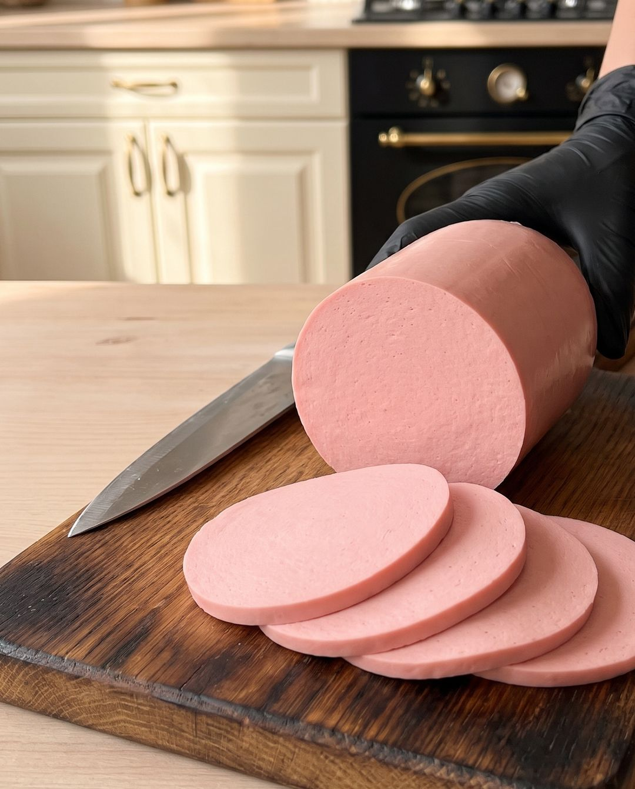

Докторская колбаса
Докторская — главная варёная колбаса советского детства: нежная, розовая, с тонким молочным вкусом. Дома её собирают из двух отдельно перетёртых фаршей — постной говядины и полужирной свинины — с молоком и яйцом. Готовый батон пружинит, режется тонкими ломтиками и расслаивается, как настоящая колбаса.
Как готовить
Подготовить и подморозить
Свинину и говядину нарезать отдельно кусками под мясорубку, с говядины срезать все прожилки и плёнки. Разложить по пакетам и подморозить до −1…−3 °C: сверху корочка, внутри мясо ещё мягкое.
Прокрутить дважды
Через решётку 3 мм прокрутить каждый вид мяса отдельно два раза. Снова в пакеты и в морозилку до −1…−3 °C.
Третий прокрут
Прокрутить в третий раз: фарш должен стать мазким, почти паштетным. Говядину можно пропустить и четвёртый раз. Фарш не теплее 12 °C, лучше 4–8 °C.
Перетереть говядину
Говяжий фарш небольшими порциями перетереть в измельчителе со всей солью, специями и молоком. Часть жидкости оставить для свинины.
Перетереть свинину
Свиной фарш так же пробить блендером с оставшейся жидкостью — водой и яйцом.
Соединить фарши
Оба фарша соединить и вымешивать до однородности, пока масса не станет резиновой и не потянутся белковые нити.
Довымешать миксером
Довымешать в миксере 3–4 минуты, следя за температурой фарша. Готовый фарш тянется белёсыми нитями.
Набить оболочку
Оболочку замочить на несколько минут, нарезать отрезками нужной длины. Набить фарш шприцем, держа цевку в середине фарша. Фарш перед набивкой — около 8 °C.
Завязать
Перевязать и затянуть каждый батон сверху и снизу; петля посередине не обязательна.
Отеплить и довести
Батоны выложить на решётку, в один вставить щуп. Отеплить на столе до +18–20 °C внутри, затем в духовке при +50 °C довести до +28–33 °C внутри, при +60–70 °C — до +47–50 °C внутри и при +80 °C на среднем уровне, без пара и воды, — до 70 °C внутри. Остудить при комнатной температуре, затем на несколько часов в холодильник.
Секреты шефа
Вместе весь фарш не пропускайте, отдельно говядина, отдельно свинина.
Фарш не должен у нас согреваться выше 12 градусов по Цельсию, оптимально 8 градусов.
Если у вас получается после мытья посуды вот такая картина, значит у вас колбаса получится.
Смотрите, раз — и она вот так вот слоями отделяется. Это натуральность.